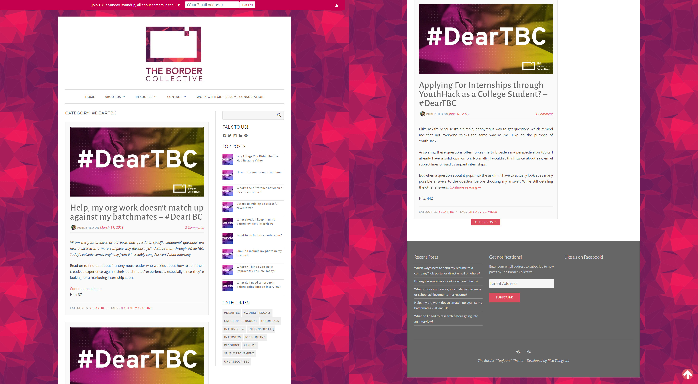
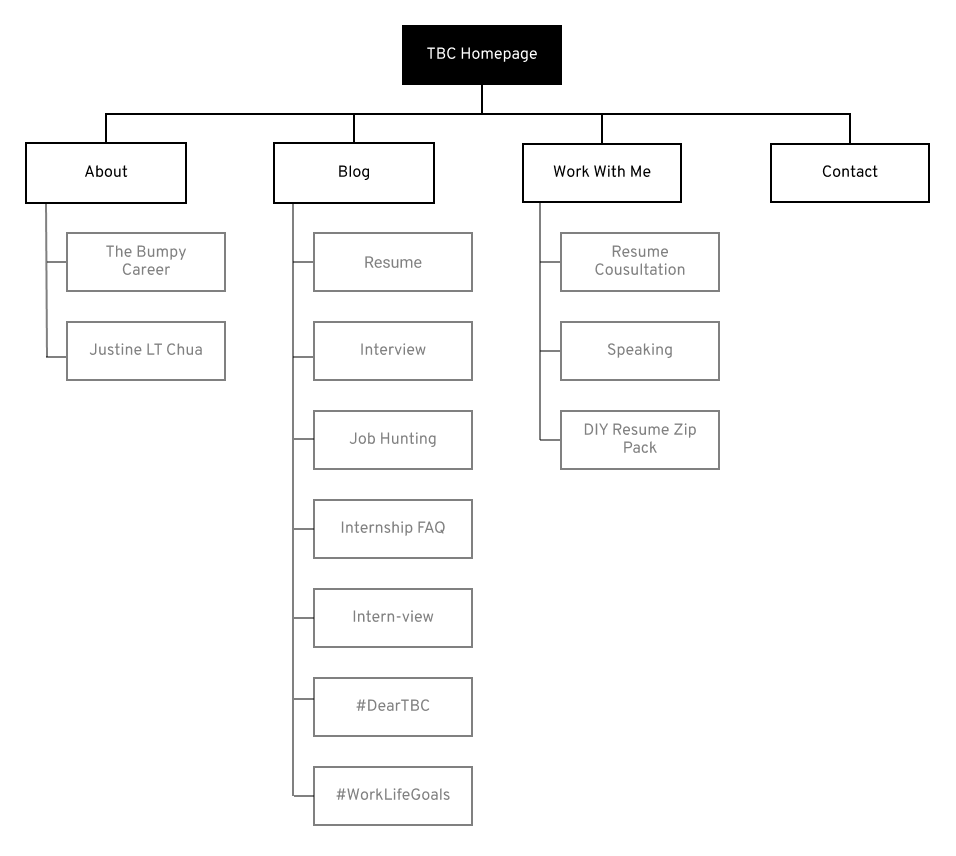
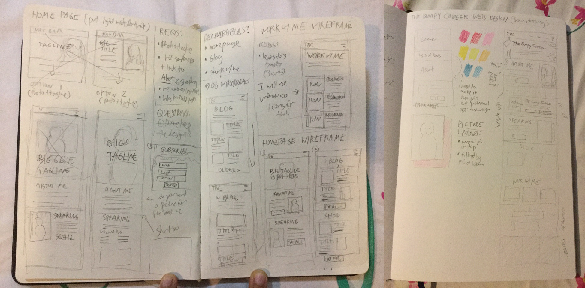
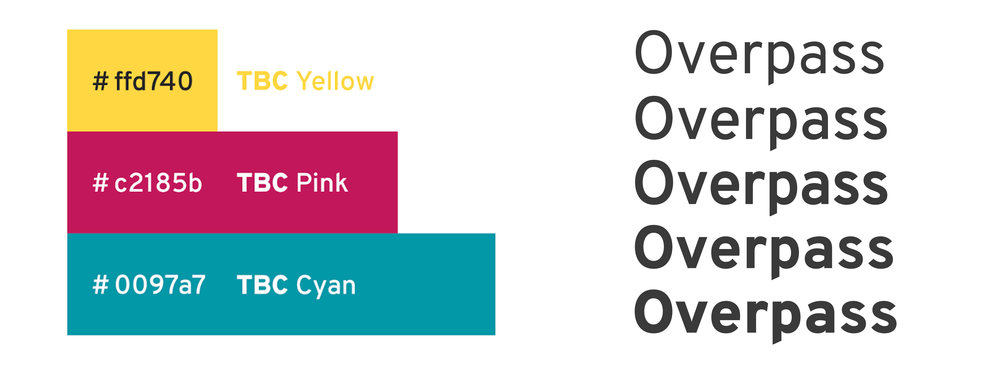
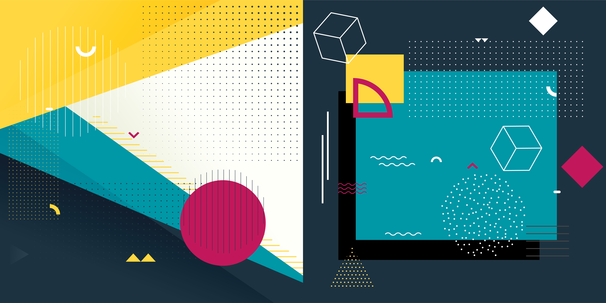
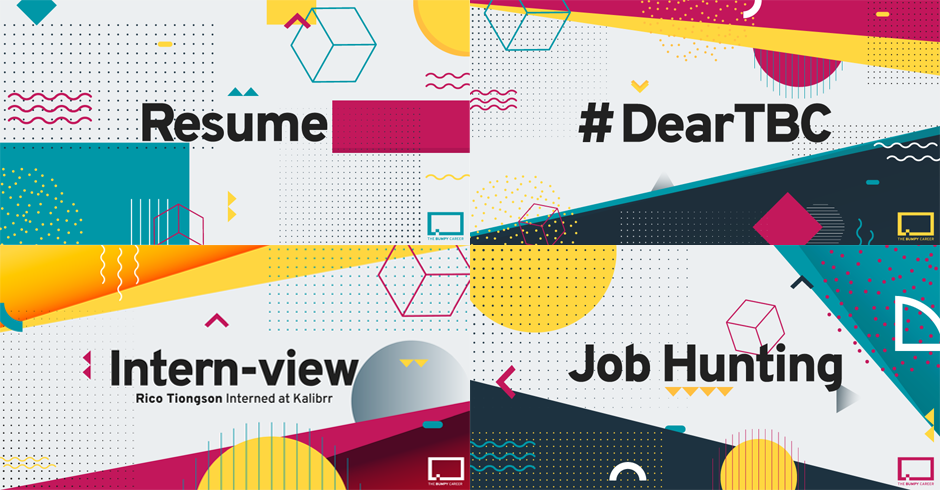
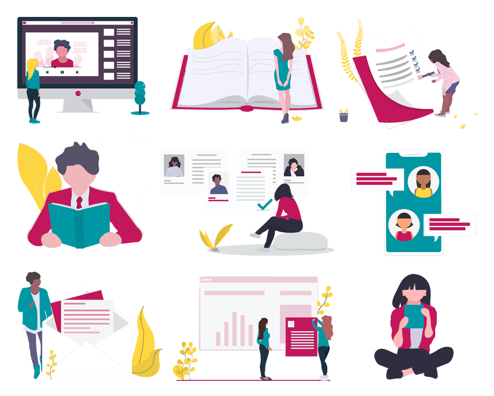
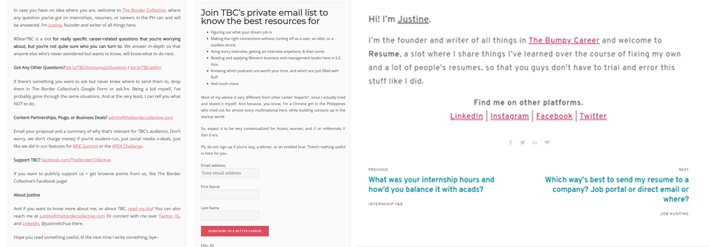

The Bumpy Career
Web design & development for the brand relaunch of the premiere career blog for Gen Z in the Philippines.
Year
2019
Role
Design Intern
Key Skills
Wireframing, Visual Design, Squarespace

The Bumpy Career is the Philippines’ premiere blog on all things internship and job hunting written specifically for college kids, founded by Justine L.T. Chua.
For this project, I was the sole designer, handling the entire process from sketching to development.
Context
Screen captures of the old TBC website
TBC first started out in 2015 as “The Border Collective”, an online zine for outcast girls. However, after its first post on interning exploded in popularity, its focus pivoted to interning and job hunting only. Over time, the brand grew, but its website wasn’t updated with it. Because of this, problems regarding usability and branding had yet to be addressed.
Pain Points
- Cluttered user interface. When the user first loads the TBC website, they are immediately bomboarded with lengthy blog posts, a sidebar, and more. All these elements would compete for the user’s attention, leaving them overwhelmed and confused.
- Design not aligned with TBC’s current brand identity. TBC actually rebranded itself a year before before the launch of the new website. However, the old website’s look remained the same, creating a dissonance between it and TBC’s social media.
- Difficult for owner to update on her own. The old website was built on Wordpress, which has a steep learning curve for those who don’t have experience with coding. So, Justine would need to consult with the website developer if she needed to edit the website’s design. As a result, she only stuck to posting on the blog.
User Persona
From experience with her previous resume consultation clients, Justine had 4 user personas:
- Anna, the sheltered Chinese girl pushing for independence. 14-19 years old, from class upper B to lower A; she came from a private high school and is currently studying at a top-tier college. Currently experimenting with her future plans through blueprints from TBC.
- Bea, the well-liked overachiever worrying constantly about her future. 17-22 years old, from class upper C to lower A; she came from either a private high school/science high school/best high school in the province and is currently studying at a top-tier college. Needs reassurance from TBC that her future is safe.
- Carlo, the casual sporty dudebro wanting a comfortable lifestyle. 19-25 years old, from class upper B to A; he came from a private high school (thanks to well-connected parents) and is currently studying in a top-tier college (despite getting waitlisted). Consults with TBC (along with skimming its articles) in order to get a high-paying job.
- Daryl, the diligent scholar working for a better life for his family. 16-22 years old, from class lower C to lower B (both parents are working middle-class); he is currently studying at a state university. Dreams of having an entreprenurial job, but decides to pursue a corporate job first (advised by TBC) in order to pay his parents back.
Based on all this information, I set the following goals: 1.) updating the website’s brand identity and 2.) increasing the website’s conversion rate. To do this, I had to make the website both visually appealing and user-friendly for mobile users.
Inquiry
Information Architecture
TBC sitemap
After consulting with Justine, Gwen Ang, my project manager, created a sitemap to visualize how information would be organized in the website. This was considerably simpler and clearer than the organization of the old website.
Wireframing
Low-fidelity wireframes
With the sitemap as a reference, I created some low-fidelity wireframes. Our main design considerations were simplifying the website’s information architecture and making its UI look more clean and visually appealing.
Design
Brand Identity
TBC color palette and typography
TBC backgrounds
TBC blog post covers
A previous designer on the project was responsible for creating the current brand identity of TBC, along with the templates of the assets pictured above. I worked with these guidelines in designing the entire website.
Illustrations
Compilation of undraw.co illustrations used in the website
To make the website more visually appealing, Justine specifically asked for undraw.co illustrations. Using the brand identity as a guide, I personally chose and edited the illustrations that were put on the website.
Squarespace

Screen captures of Brine demo website
To save time, I started making the website after my wireframes were approved. The website was built on Squarespace due to its ease of use. The base of its design is the Brine template, chosen for its flexibility in customization. I also chose it for its minimalistic layout, which I wanted to apply to TBC.
Output

Screen captures of TBC Website pages
Homepage

Video capture of TBC Homepage
Compared to the previous website’s (which was just blog posts in reverse chronological order), this current iteration has a better user onboarding experience. First, it gives the reader a starting point by suggesting articles based on their demographic, along with some featured blog posts. After that, it introduces Justine, and also links to her speaking page. It then accounts for the case of a reader who needs more guidance with a call to action button to her resume consultation page. Finally, the TBC newsletter is shown. Client testimonials are spread throughout to enforce credibility.
Blog Post
Comparison of old and new blog post CTA
Reading articles on the new website is considerably easier due to a cleaner interface. It also has a shorter call to action, since many of its components (e.g. contact details, email list) were transferred to other website pages.
Next Steps
- Polish responsive design for mobile platforms. Due to the limits of the Squarespace platform, I found myself hard coding many of the website’s custom features (e.g. font, tables). Unfortunately, the website’s responsiveness is still lacking; text that may look like the right size on desktop will look too big on mobile. My usual hard coding hasn’t worked, but I’m still trying to figure out a solution to this problem.
- Conducting usability research. Working with participants in Justine’s target demographic (i.e. college kids) will help me find more issues with using the website.